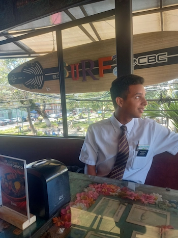
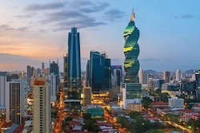

Johann Vasquez
Who am I?
Hi! My name is Johann Vasquez, and I'm from Panama City, Panama. I have a deep passion for computers and programming, especially exploring new technologies and solving complex problems through code. I’m currently studying software development at BYU, and I’m constantly amazed by how much there is to learn and the endless possibilities technology offers.I'm particularly excited about web development and understanding how web pages function behind the scenes. I want to master building dynamic, user-friendly applications. Beyond coding, I enjoy collaborating on projects, learning from others, and staying updated with the latest industry trends. My goal is to become a well-rounded developer, contribute to meaningful projects, and maybe even launch my own startup one day. The tech field is always evolving, and I love the challenge of keeping up with new advancements. Whether it's debugging code, designing interfaces, or optimizing performance, I find every aspect of development fascinating. I can't wait to see where this journey takes me and the impact I can make in the digital world!
Where do I live?
My home, Panama City, is a symphony of vibrant life. The tropical sun glints off the glass towers of its modern skyline, while below, weathered fishermen mend their nets along the bustling waterfront. Just a short walk away, the Casco Viejo—the old town—unfolds in a cascade of cobblestone streets, pastel-colored colonial buildings, and lively plazas filled with the aroma of sizzling empanadas.